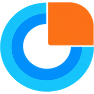

Studio
Karaoke & rekam
Cari
Siap rekam
Lirik karaoke yang sedang
dinyanyikan
baris lirik berikutnya muncul di sini
YouTube
Judul lagu karaoke
Nama channel · 01:36 / 04:12
Jeda
4:12
Hasil karaoke 1
Channel karaoke
3:58
Hasil karaoke 2
Channel karaoke
4:30
Hasil karaoke 3
Channel karaoke
5:02
Hasil karaoke 4
Channel karaoke
Perekam
REC
Converter
Bluetooth mixer
Level pas
Iklan YouTube
01:24
Merekam · tersimpan otomatis saat Stop
Level suara
-60
-30
-12
-3
0 dB
Volume input
90%
Rekam dari
Converter (YA USB Audio)
Putar ke
Mixer lewat Bluetooth
Rekaman saya
5 file
Rekaman 15.02
Hari ini · Studio
01:14
Rekaman 14.58
Hari ini · Asli
00:28
Rekaman 14.52
Hari ini · Asli
00:30
Rekaman 14.35
Hari ini · Asli
01:32
Rekaman 14 Nov
Minggu lalu · Asli
03:05
Rekaman 15.02
Asli
Hasil studio
00:00
00:15
00:30
00:45
01:00
01:14
Studio
Analisa
Rapikan dengan Claude
Claude membaca hasil analisa lalu memilih efek terbaik
"Vokal agak tenggelam di bagian reff dan ada desis halus. Saya nyalakan Penyeimbang suara 40%, Bersihkan desis, dan sedikit gema ruang."
Rapikan sekarang
Natural
Pop
Ballad
Rock
Dangdut
Bersihkan desis
Hilangkan dengung dan desis latar
Penyeimbang suara
Suara pelan dan keras jadi stabil
EQ vokal
Bass rapi, vokal lebih jernih
Haluskan huruf "s"
Kurangi bunyi s dan sh yang tajam
Gema ruang
Kering sampai ruang konser
Keraskan akhir
Setara lagu di Spotify, tanpa pecah
Nada lagu
Naik/turun bersama musik
0
Koreksi nada vokal
Butuh rekaman vokal terpisah dari musik
Dengar hasil
Simpan hasil
Pecah
Tidak
Aman
Bagian senyap
3%
Normal
Bass
32%
Seimbang
Vokal jelas
21%
Jelas
Keseimbangan nada
5%
Getaran
<80 Hz
32%
Bass
80–300
42%
Badan
300–1,2k
21%
Jelas
1,2–5k
0%
Udara
>5k
Rekaman sudah bagus.
Tidak ada yang perlu diubah di mixer.